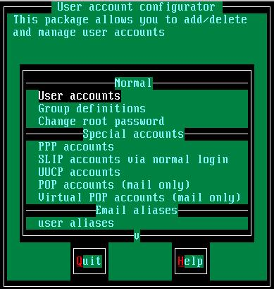
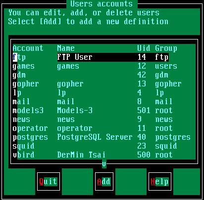
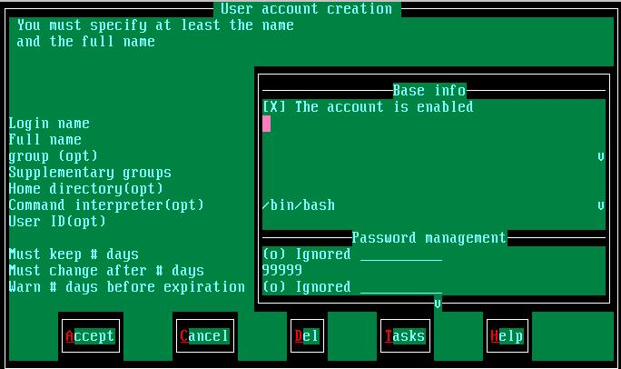
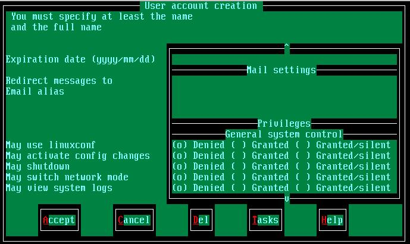
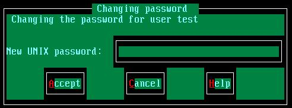
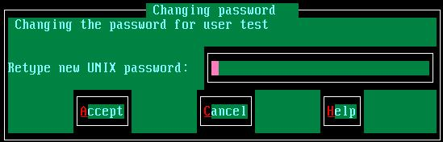
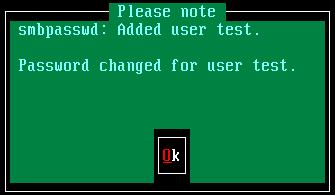

使用 /bin/userconf （在 7.0 之后为 /sbin/userconf）来新增使用者或群组是一件很简单的事情，不过，请注意，您的身份必须要是 root 才可以使用这个档案！在提示字符之下输入： /bin/userconf 则会出现如下的画面：在这个画面中，目前我们所要使用到的功能只有：当然，其实我们关心的只有 User accounts 这一项啰！在操作上，使用『上下键』移动反白的线条，而使用『Tab』键来使光标移动到底下的 Quit 及 Help 按钮！
- User accounts
- Group definitions
- Change root password
1. 进入 User account：在 User accounts 按下 Enter 键，会出现：
在这个画面中，第一栏为登入的账号，第二栏为这个账号的名称（可有可无），第三栏是这个账号在这架 Linux 主机中的编号，第四栏则是这个账号所代表的群组。你可以看到上面有个 vbird 的账号，这个账号的使用者是 DerMin Tsai（就使鸟哥啦），然后 vbird 这个账号的编号是 500，而所属的群组是 root 这一个。2. 新增使用者：在上图中双击 『Tab』 键将光标移动至 Add 这一项，按 Enter，会出现：
- 关于Uid编号：这个编号是 Linux 的一个识别的 ID，通常，使用者的编号都是在 500 号以后，而有关系统的账号，例如上图中的 lp （打印机服务）、mail（邮件服务）、ftp（FTP服务）等等之编号通常都在 100 以内。当然你也可以将自己的编号订在 500 号以内，但并不建议这样做，因为可能你的编号会与系统服务的账号相同，而产生一些问题.....
在这个画面中，你所需要输入的其实只有 Login name 就可以了，其他的东西系统会自动帮你设定。不过，如果你需要将使用者分门别类的话，最好还是设定一下比较好！
- Login name：输入要新增的使用者的账号（就是 ID 啦）；
- Full name ：这是这个账号的使用者全名，这个地方是可有可无的，不会影响！
- group ：用来指定这一个 ID 的所属群组，通常鸟哥都会将在我机器上的使用者分成几各类别，而分别给予不同的群组，好方便管控！
- Supplementary groups：除了主要的群组之外，Linux 还提供你其他的支持群组！不过通常不用设定就可以了；
- Home directory(opt) ：这是用来设定这个账号用户的家目录。通常如果不设定的话，默认的用户家目录都在 /home/userID ，但是当你的硬盘容量不够大的时候，或者想将某人移动到某一个目录的话，就可以直接在这边改一改啰！
- Command interpreter(opt) ：这是使用者预设的 Shell ，通常在 Linux 下，我们都使用 BAShell ，所以不用改啦；
- User ID(opt) ：注意喔，这个 ID 可不是前面的 login 的 ID ，这个 ID 是前面说的 Uid 编号，你可以自己设定一个大于 500 且不与其他账号重复的 ID，也可以交由系统自动设定；
OK！设定完成之后，按下 『Tab』 键，选择 Accept 按 Enter，这时会出现要你输入密码的画面：
- 设定邮件别名（alias）：基本上设定完这里就可以了，其他的保持默认值即可。不过，如果你已经有开启了 mail 服务，而虽然你的 ID 是 vbird ，但是也想要使用另一个 ID 为 dmtsai 的时候，其实不用再设定另一个账号，只要使用 alias 的功能即可。将光标往下移动，可以看到如下的画面：

在上面这个画面中，将光标移动到 Email alias 这一项上面。输入你要的别名(alias)即可。所谓的设定 邮件别名 的意思是这样的，当你想要让 dmtsai 的邮件也传递到 vbird 这个账号时，使用使用 邮件别名，则系统在收到 dmtsai 这个 ID 的信件时，会将信直接传送到 vbird 而不会使用 dmtsai。最常使用 邮件别名 的时候是：当一群人都想要使用同一个账号时。例如：你是一个系统管理员，若你要进行系统维修的时候，会在两天前发 e-mail 向你的使用者通知。如果是一个小站的话，那你可以慢慢的发个几封信也就是了，但是当你负责的是一个几百甚至几千人的企业时，这样发信是否觉得很麻烦呢？这时就可以使用 mail alias 的功能了，每个用户的 mail alias 都可以设定为同一个虚拟账号，例如每个人都有一个叫做 piggg 的账号，则你只要寄信给 piggg 这个账号时，系统会自动帮你把信传送给每一个人喔！好用吧！关于这部份，我们会在 mail server 中再次提到！
请输入这个账号所想要的密码。请注意，通常密码的限制是：这是主要的限制，不过，由于你是『权力无限大的管理员』，所以密码的形式是『不限的』（虽然没有照规矩来时，在设定中会出现一些错误讯息，不过并不会影响你的设定！）。输入完毕之后会出现在输入一次的画面：
- 密码不能与账号相同；
- 密码需要超过 8 个字符；
再次输入一次密码之后，如果出现如下的画面，那就新增完成了！3. 新增群组：新增群组的话请选择 Cancel 跳出到最前面的画面，选择 Group definitions 这一项，就会出现 Group 的列表，基本上 Group 的增加与新增使用这是相同的方式，在此就不多说了！留给大家去尝试尝试吧！